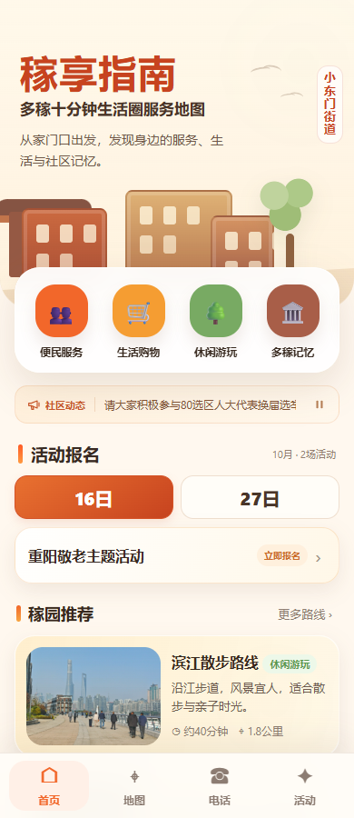
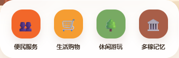

已回到原先的图标
便民服务、生活购物、休闲游玩、多稼记忆均恢复原有图标、配色与样式。



恢复检查
- 首页、四类列表、地图标记、纸质指南目录和电话页同款图标均已恢复。
- 两个网页入口检查通过，57 个地图标记恢复原样。
- 共享脚本与样式和替换前版本一致；只更新了缓存版本，避免浏览器继续显示新方案。
其他更新保留
海音琴行、强生医院名称、点位照片、纸质指南新内页、已有短评和活动内容均未撤回。
新方案截图与素材仅作为已撤回的历史资料保留，当前网页不再引用。未提交、推送或触发部署。